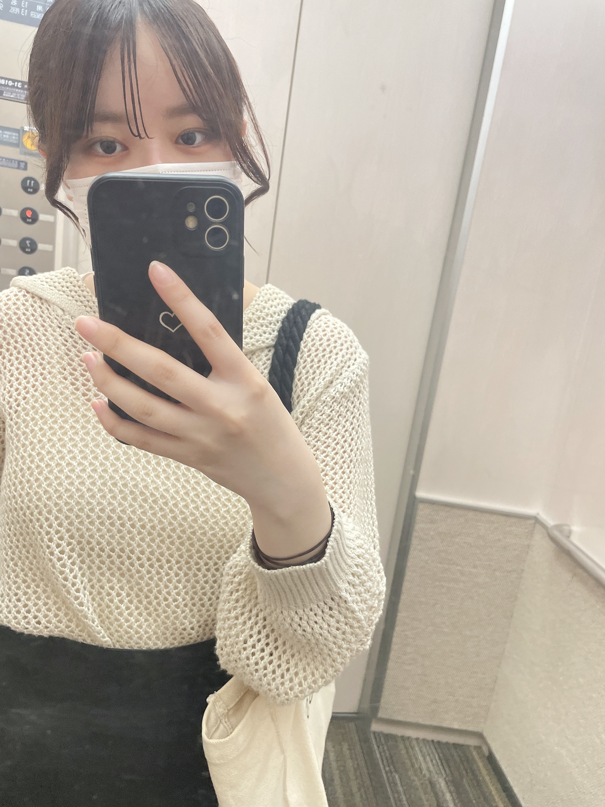

Portfolio
About

河本くるみ
学生時代にWebデザインを学び、HTML/CSSやAdobe Photoshop・Illustratorを使ったデザインの経験があります。 今回、案件でWeb制作に関わることになり、自分のスキルを整理して見てもらうためにポートフォリオを作りました。 現在はデザイン中心の作品を紹介していますが、今後はコーディングも取り入れて、より実践的なWeb制作スキルを磨いていきたいです。

学生時代にWebデザインを学び、HTML/CSSやAdobe Photoshop・Illustratorを使ったデザインの経験があります。 今回、案件でWeb制作に関わることになり、自分のスキルを整理して見てもらうためにポートフォリオを作りました。 現在はデザイン中心の作品を紹介していますが、今後はコーディングも取り入れて、より実践的なWeb制作スキルを磨いていきたいです。